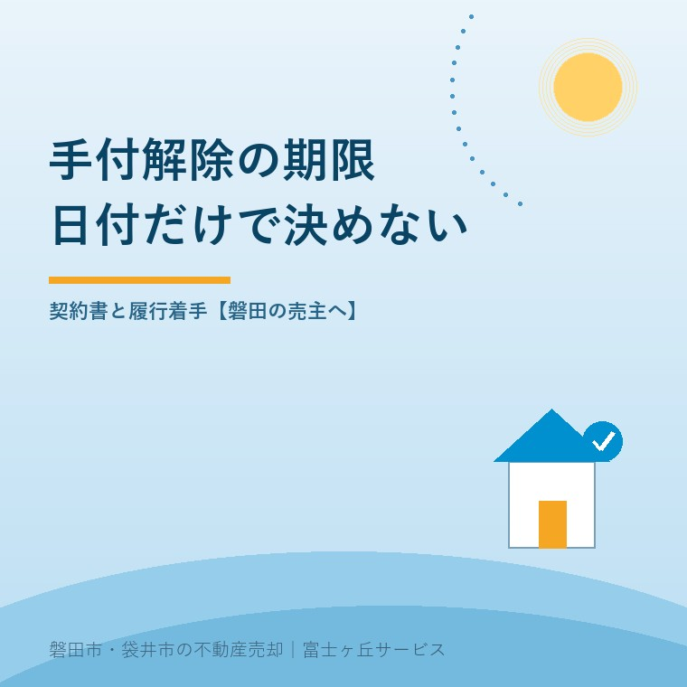
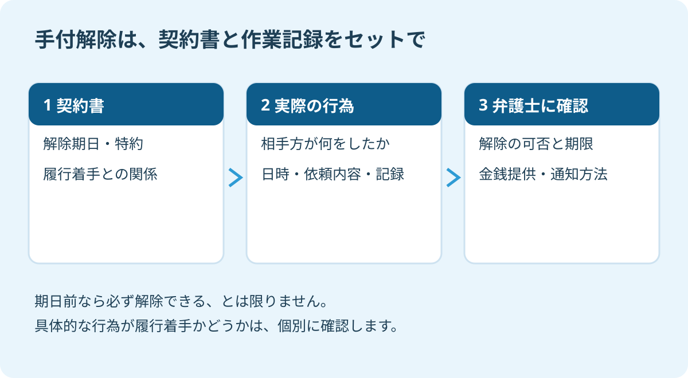

手付解除はいつまで？磐田の売主が読む期限条項
2026年9月16日｜カテゴリ：売買契約・手付解除

この記事の要点
Q. 手付解除の期日までは、売主も自由に契約をやめられますか。
手付解除は、契約書の期日だけで判断できません。原則となる相手方の履行着手と、特約で定めた期限の関係を確認します。売主の手付倍返しも、通知だけで済むと考えず弁護士に確認を。磐田市・袋井市・森町では、介護施設の運営から不動産事業を始めた富士ヶ丘サービスのような地域密着の会社に相談する選択肢があります。
実家を売る契約書に「手付解除期日」とある。日付に線を引けば、そこまでは考え直せる。そう受け止める前に、同じ条項にある「履行に着手」という言葉と、末尾の特約まで読んでください。
大石浩之（磐田市／不動産業）です。宅地建物取引士として私は、契約を結ぶ前に、家族の迷いと解除条件を確認したいと考えます。売ると決めるまで時間を取ることと、契約後に相手の予定を崩すことは、同じ話ではありません。
全国宅地建物取引業協会連合会は、1984年に9月23日を「不動産の日」と定めています。2026年9月16日のこの記事では、その日を前に売主が期限条項を点検するきっかけとして取り上げます。磐田市での2026年の催事開催を案内するものではありません。
手付解除は、期日と履行着手の関係で読む
手付解除の可否は、契約書の期日と、相手方が契約の履行に着手したか、特約がどう定めているかを合わせて確認します。ここでは、宅建業者ではない個人が実家を売る場合を中心に整理します。仲介会社が入っていても、それだけで売主自身が宅建業者になるわけではありません。
不動産適正取引推進機構の「不動産のQ&A」は、手付による解除と期限の特約を説明しています。特段の定めがない場合の解約手付では、買主は手付を放棄し、売主は手付を倍返しする仕組みです。相手方の履行着手による制限と、契約で加えた条件を確認します。
売主の倍返しは、受け取った手付を返すだけでは足りません。例えば、手付金100万円なら、受領済みの100万円と自己資金100万円の合計200万円を提供する計算です。これは説明用の設例です。別に200万円を上乗せし、合計300万円にするという意味ではありません。
「倍額を返すつもりです」と伝えるだけで解除が済むと考えないでください。金銭を現実に提供する方法、解除の通知、期日との関係を、契約書と一緒に弁護士へ確認します。この記事をそのまま解除通知として使うことはできません。
私が手付解除の仕組みを評価するのは、条件に従って契約を解消する道筋を、契約段階で示せる点です。家族が不確かな約束を抱えるより、負担と期限を知って意思決定できます。
そのうえで、説明する側には「何日まで」という一言で済ませないでほしい。私はそう考えます。印字された日付と、実際に動く人やお金をつながなければ、家族は肝心な制限を見落とします。
『または』の一語で、期限を決めつけない
手付解除の期限特約は、条項全体と契約の経緯を読んで判断します。日付と履行着手が並んでいても、「必ず早い方」「必ず遅い方」と一律には案内できません。不動産適正取引推進機構が紹介する裁判例にも、その読み方が争われた事案があります。
同機構の2023年秋号146頁は、2022年4月28日の東京地裁判決を紹介しています。個人売主が、手付解除期日か履行着手の遅い方まで解除できる契約だったと主張しました。しかし、この事案では早い方が期限と解釈され、期日後の申出による手付解除は認められませんでした。
一方、同機構のQ&A問5には、所定期日までの買主の手付解除を認めた別の裁判例が載っています。売主が宅建業者であることなど、前提が違います。同じような言葉が使われているから、自分の契約も同じ結論だと読み替えるのは避けてください。
| 契約書で探す箇所 | その場で確認する問い |
|---|---|
| 手付解除期日 | 年月日が明記され、家族も確認したか |
| 履行着手に関する文 | 相手方の着手で解除が制限される定めか |
| 特約・追記 | 期日までは着手後も解除できるなどの別の合意があるか |
| 金銭提供・通知の文 | 金額、方法、通知先、期限の関係を確認したか |
売主が宅建業者で、買主が宅建業者ではない取引には、宅地建物取引業法39条による買主保護の規定があります。買主に不利な期限の特約が無効となる場合もあります。個人売主向けの説明を業者売主の契約へ、そのまま移さないことです。
買付段階と契約後の解除も別です。買付証明書・一番手とローン特約の確認では、手付解除と融資利用の特約を分けています。手付解除の期限が過ぎても、別の解除条項が使えるかはその条件次第です。名前だけで選べるものではありません。
履行着手は、予定表の作業名だけで判断しない
履行着手とは、単に気持ちを固めたことや、何かを準備したこと全般を指す言葉ではありません。契約上の義務を実現する行為を、実際にどの段階まで行ったかが問題になります。「司法書士へ依頼済み」「測量を予定」といった作業名だけでは結論を出せません。
不動産適正取引推進機構の2023年秋号148頁が紹介する、2021年10月27日の東京高裁判決があります。業者売主が登記手続きを司法書士に委任し、登記書類を準備したことについて、その事案では単なる準備行為とされました。依頼が済んだという事実だけで、履行着手だと決まるわけではないのです。
反対に、「引渡し前だから何も始まっていない」とも言えません。予定と実施済みを分け、誰が、いつ、どの契約上の義務に向けて、何をしたかを整理してください。着手に当たるかは、資料を見せて弁護士に確認します。

私なら、予定表に「依頼した日」と「実施した日」の二つの欄を作ります。支払いや書類交付があれば、その日付も記録します。履行着手を家族が判定するためではなく、弁護士が経緯を確認できる形にするためです。
抵当権のある実家なら、住宅ローン残高と抵当権の確認で返済・抹消の段取りを整理します。返済の相談、返済資金の準備、実際の返済を混同しないようにします。どの行為が解除へ影響するかは別途確認します。
磐田の売主は、契約前に家族の迷いを確認する
磐田市で実家売却を進める家族には、契約書への署名前に、家族の意思と引渡しまでの予定を一枚にそろえるよう私は提案します。遠方の家族がいる場合も、金額だけを電話で確認して終わらせず、解除期日と作業の順番を共有します。
まだ決めない自由は、契約を軽く扱う自由ではありません。私はこう考えます。売却への迷いが残るなら、契約前に何が決まっていないのかを出す。契約後も簡単に戻れるという説明で背中を押すのは、売主にも買主にも責任を果たしたことになりません。
例えば、磐田市の実家の残置物整理を、袋井市に住む家族が手配する場合を想定します。売買契約前の片付けの相談と、契約で約束した引渡しに向けて実施する作業は、経緯が違います。この記事だけで片付けを履行着手と判定せず、契約内容、依頼日、実施日を記録するのが私の提案です。
私にも迷いはあります。売却の話を進めたい家族と、実家を手放すことに納得できない家族がいるとき、どこまで待つかは簡単には決められません。ただ、解除条項を家族の合意の代わりには使いません。迷いの理由を確認してから、契約するかどうかを決める時間を取ります。
契約後に事情が変わった場合は、曖昧なまま放置せず、仲介担当者へ経緯を伝え、弁護士に相談します。解除できると思い込んで、代金受領や引渡しの準備を勝手に止める前に確認が必要です。決済当日に動くお金も含め、既に決まった予定を並べてください。
今日の確認は、契約書と経緯を弁護士に渡すこと
手付解除を検討するときに今日できる確認は、契約書の全ページと、契約後のやり取りをそろえることです。解除条項の一行だけを切り出さず、特約や日付欄も含めて相談します。
- 契約書・特約・手付金の領収記録を一組にする。
- 相手方と自分の実施済みの行為を日付順に並べる。
- 弁護士に、可否、期限、金銭提供と通知の手順を確認する。
手付解除が使えなければ、違約金を払うと伝えるだけで自由に離脱できるとも限りません。合意による解除を含め、どの方法が可能で、どの負担が残るかを個別に確認します。
富士ヶ丘サービスは、磐田・袋井に根ざし、介護と不動産を一体で相談できる窓口を設けています。施設入居や実家の整理に合わせ、家族が困らない売却の段取りを考えます。私は、契約前には判断材料をそろえ、契約後は条項と事実を確かめるよう案内します。税務・登記・相続の個別判断は専門家に確認を。手付解除の可否は弁護士に確認してください。
よくある質問
契約や申請の準備で確かめたい疑問に答えます。
- 手付解除の期日前なら、売主は必ず解除できますか。
- 期日前という理由だけでは断定できません。相手方の履行着手をどう扱うか、契約書の手付解除条項と特約を合わせて読みます。期日と履行着手のいずれを優先するかは、文言や契約の経緯により確認が必要です。契約書と実際の作業記録を用意し、解除の可否や手順は弁護士に確認してください。
- 手付金100万円の倍返しは、さらに200万円を払うことですか。
- 手付金100万円なら、受け取った100万円の返還に、自分の資金100万円を加え、合計200万円を提供する計算です。受領額とは別に200万円を上乗せする意味ではありません。ただし、資金を用意しただけで解除が成立するとは限りません。現実の提供、通知、期限の扱いは契約書を示して弁護士に確認してください。
- 司法書士へ登記を頼んだら、履行着手になりますか。
- 司法書士への依頼だけで、必ず履行着手になるとはいえません。不動産適正取引推進機構が紹介する2021年10月27日東京高裁判決には、委任や登記書類の準備を単なる準備行為とした事例があります。ただし、全ての取引に同じ結論を当てはめず、依頼内容と進捗、契約条項を示して弁護士に確認してください。

この記事を書いた人：大石浩之（磐田市／不動産業・宅地建物取引士）
富士ヶ丘サービス株式会社。介護施設の運営から不動産事業を始め、磐田市・袋井市・森町で、介護と相続、実家の売却を一体で相談できる窓口を設けています。家族が困らない売却のため、資料と現地の条件を一件ずつ整理します。著者プロフィール
参考にした公式情報
2026年9月16日確認。
本記事は2026年9月16日時点の公開情報と筆者の意見です。制度・数値・手続きは変更されることがあります。税務・登記・相続の個別判断は税理士・司法書士などの専門家に確認を。契約の効力や解除の可否は、契約書と経緯を示して弁護士に確認してください。